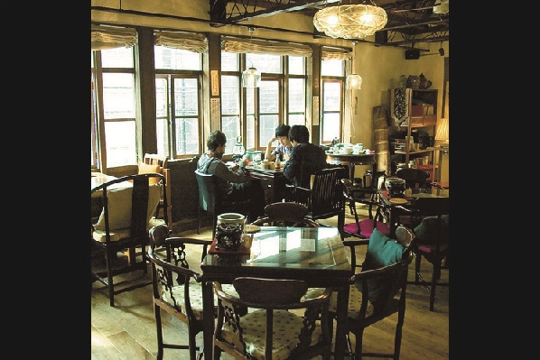

THE KEYS
THE KEYS

Member
大西庸央(Vo&Gt)
Follow @thekeys_onishi
立田泰之(Ba)
つなかわ和行(Dr)
Follow @thekeys_tsuna
ツイートする
Profile
神戸出身のバンド。
2007年、神戸を拠点にライヴ活動を開始。現在は東京に拠点を移し活動している。
UKフォーク・ロックを独自に消化し、日本語だけでなく英詞でも綴られるその音楽は、牧歌的なメロディーがボーカル大西の声と共に「どんな瞬間」にも心地よく響く。
また今春より動画サイトTOKYO ACOUSTIC SESSIONを始動する。今夏にはFUJI ROCK FESTIVAL、Rookie A Go Goへ出演。
Comment
ロックの夜明けへの出演も今回で3度目。
毎回本当に楽しませていただいております！
イベント当日11/9は俳優・加瀬亮さんの誕生日です。
ハチミツとクローバー、好きです。
The Keys つなかわ和行
YouTube
［ Miss The Train ］
［ The Land Of Celebration ］
Link
Official Web Site
毎回本当に楽しませていただいております！
イベント当日11/9は俳優・加瀬亮さんの誕生日です。
ハチミツとクローバー、好きです。
The Keys つなかわ和行